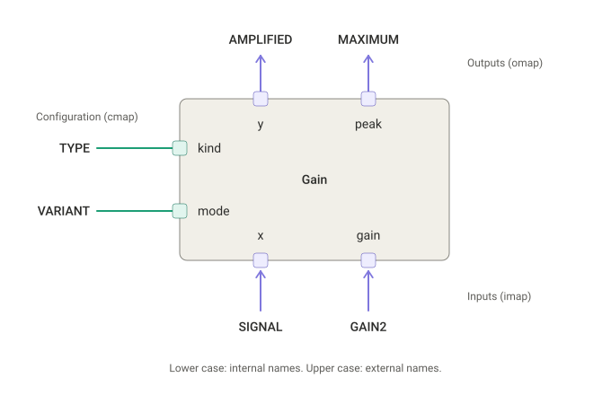
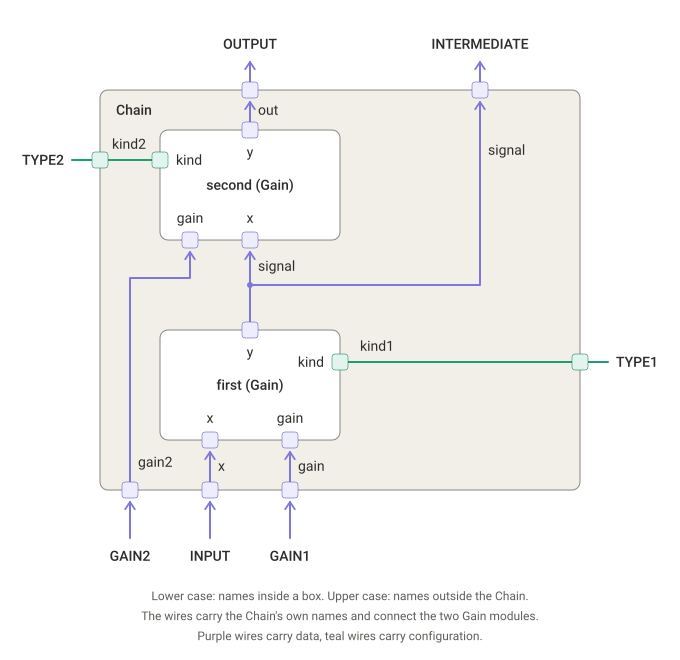

🧩 Modules#
A module is the basic building block of more complex models in dcmri.
It is a configurable function with named inputs and outputs: you choose a
configuration once, and
then call it with a dictionary of inputs to get a dictionary of outputs.
Modules are useful because:
Names, not positions. Inputs and outputs are identified by name, so a module can be called with just the data it needs and ignores everything else.
One class, many variants. A single module class can describe a whole family of models. The configuration decides which variant you get, and with it which inputs and outputs are needed.
They connect. The outputs of one module can be renamed to match the inputs of another, and several modules can be wrapped in a new module to build a more complex one.
They describe themselves. A module can list its configurations, inputs and outputs without being run.
The examples below use toy modules to illustrate these points.


Defining a module#
A module is a subclass of dcmri.Module. At minimum it implements three
methods:
inputs()returns the set of input names,outputs()returns the set of output names,_call(p)does the computation. It receives a dictionarypwith a value for each input and returns a dictionary with a value for each output.
Here is a toy module that multiplies a signal x by a gain. It returns
the amplified signal y and its maximum peak:
import numpy as np
import dcmri
class Gain(dcmri.Module):
def inputs(self):
return {'x', 'gain'}
def outputs(self):
return {'y', 'peak'}
def _call(self, p):
y = p['gain'] * p['x']
return {'y': y, 'peak': float(np.max(y))}
Calling the module is then a matter of passing a dictionary:
x = np.array([1.0, 2.0, 3.0])
model = Gain()
model({'x': x, 'gain': 2.0})
# {'y': array([2., 4., 6.]), 'peak': 6.0}
Extra entries in the dictionary are ignored, so the same dictionary can be passed to many different modules.
Configuring a module#
Many models come in several variants. Instead of writing a separate class for
each, a module declares its options in the class attribute configs, which
maps each option to its allowed values, and the default choices in
defaults. The methods inputs(), outputs() and _call() can then
depend on the chosen configuration, which is stored in self._config.
Let us extend the toy module with two options:
kindchooses between a'linear'and a'saturating'gain. The saturating variant caps the output at a maximum value, which it needs as an extra inputxmax.modechooses whether the module also returns thepeakof the output ('with_peak') or only the signal itself ('plain').
class Gain(dcmri.Module):
configs = {
'kind': {'linear', 'saturating'},
'mode': {'plain', 'with_peak'},
}
defaults = {'kind': 'linear', 'mode': 'with_peak'}
def inputs(self):
if self._config['kind'] == 'linear':
return {'x', 'gain'}
return {'x', 'gain', 'xmax'}
def outputs(self):
if self._config['mode'] == 'plain':
return {'y'}
return {'y', 'peak'}
def _call(self, p):
y = p['gain'] * p['x']
if self._config['kind'] == 'saturating':
y = np.minimum(y, p['xmax'])
if self._config['mode'] == 'plain':
return {'y': y}
return {'y': y, 'peak': float(np.max(y))}
The configuration is chosen with keyword arguments when the module is created. Note that the choice changes which inputs and outputs the module has:
Gain()({'x': x, 'gain': 2.0})
# {'y': array([2., 4., 6.]), 'peak': 6.0}
sat = Gain(kind='saturating')
sat({'x': x, 'gain': 2.0, 'xmax': 5.0})
# {'y': array([2., 4., 5.]), 'peak': 5.0}
Gain(mode='plain')({'x': x, 'gain': 2.0})
# {'y': array([2., 4., 6.])}
sat.config
# {'kind': 'saturating', 'mode': 'with_peak'}
Values that are not listed in configs are rejected when the module is
created:
Gain(kind='cubic') # raises InvalidConfig
The names of the configuration options can also be changed with the argument
cmap, which maps the internal names to the names you want to use:
Gain(cmap={'kind': 'TYPE'}, type='saturating')
Exploring a module#
For a toy module like Gain it is easy to see what it needs. For a realistic
module with many configurations it is not. The inputs and outputs change with
the configuration, so the same class can need a different set of inputs in
different situations, and it is impossible to keep track of this by reading the
source. Instead, ask the module. Because the answers come from the same methods
that the module uses when it runs, they are always correct.
What does this module need?#
The methods inputs() and outputs() return the names of the inputs and
outputs of a module with its current configuration:
model = Gain(kind='saturating')
sorted(model.inputs()) # ['gain', 'x', 'xmax']
sorted(model.outputs()) # ['peak', 'y']
sorted(Gain().inputs()) # ['gain', 'x']
These are the internal names. If the module has been created with input or
output mappings, the names that you actually use when calling it are different.
These are returned by mapped_inputs() and mapped_outputs():
model = Gain(
imap={'x': 'SIGNAL', 'gain': 'GAIN2'},
omap={'y': 'AMPLIFIED', 'peak': 'MAXIMUM'},
)
sorted(model.inputs()) # ['gain', 'x']
sorted(model.mapped_inputs()) # ['GAIN2', 'SIGNAL']
sorted(model.mapped_outputs()) # ['AMPLIFIED', 'MAXIMUM']
The mapped versions are the keys of the dictionaries that you pass in and get back, so they are the ones to use when preparing data for a module or when checking whether modules fit together.
They are also the tools for connecting modules. The inputs that a module still
needs from the outside are the ones that no earlier module provides. For the
two Gain modules from the section below, this is a plain set operation:
first = Gain(mode='plain', omap={'y': 'signal'})
second = Gain(mode='plain',
imap={'x': 'signal', 'gain': 'gain2'},
omap={'y': 'out'})
needed = second.mapped_inputs() - first.mapped_outputs()
sorted(needed) # ['gain2']
This is exactly the calculation that the Chain module further down uses in
its own inputs().
The method new_mapped_outputs() returns the outputs that are not also
inputs, i.e. the quantities that the module adds to the data rather than
overwrites:
model = Gain(omap={'y': 'x'}) # the output overwrites the input
sorted(model.mapped_inputs()) # ['gain', 'x']
sorted(model.mapped_outputs()) # ['peak', 'x']
model.new_mapped_outputs() # {'peak'}
Printing a summary#
To see what the quantities are, and not only their names, the module can print
tables of its inputs and outputs, with the properties of each quantity as
defined in the quantity registry or in the module’s own quantities. The same
information is available as dictionaries:
model = Gain()
model.print_inputs()
model.print_outputs()
model.input_quantities() # dictionary instead of a table
model.output_quantities()
The configuration that the module currently uses is stored in config, and
test_data() returns a complete set of inputs with their default values,
which is a quick way to get a dictionary that the module can be called with:
model.config # {'kind': 'linear', 'mode': 'with_peak'}
model.test_data() # {'x': 1.0, 'gain': 1.0}
What can the class do?#
The methods above describe one configured instance. Class methods describe everything that a class can do, without creating an instance yourself:
Gain.print_configs() # all options, their values and defaults
Gain.all_configs() # list of all combinations of options
inputs, outputs = Gain.all_io()
sorted(inputs) # ['gain', 'x', 'xmax']
sorted(outputs) # ['peak', 'y']
all_inputs() and all_outputs() return the same as the two halves of
all_io(), which does both in one pass and is therefore faster if you need
both. print_all_inputs(), print_all_outputs() and print_all_io()
display them as tables.
Not every combination of options has to be valid. A module can reject a
combination when it is created, and all_configs(valid=True) only returns the
ones that are accepted:
len(Gain.all_configs()) # 4
len(Gain.all_configs(valid=True)) # 4, every combination is allowed here
Note
These class methods work by creating every valid configuration, so they can
be slow for a module with many options. Use verbose=1 to show a progress
bar. If you only need an impression, all_configs and all_io accept
sample (the number of random combinations to try) and seed, at the
price that a sampled answer may be incomplete:
Gain.all_configs(sample=2, seed=0) # two random combinations
A module with a very large number of configurations can avoid the
enumeration altogether by listing its inputs and outputs in the class
attributes _all_inputs and _all_outputs. The class methods return
these directly if they are set.
Renaming inputs and outputs#
Inside a module, inputs and outputs have fixed internal names, such as x
and y above. The names used in the data dictionary you pass in and get back
are the external names. By default they are identical, but they can be mapped
when the module is created:
imaprenames inputs,omaprenames outputs,iomapapplies one mapping to both.
Each maps an internal name to an external one. Names that are not mentioned keep their own name.
model = Gain(imap={'x': 'SIGNAL'}, omap={'y': 'AMPLIFIED'})
model({'SIGNAL': x, 'gain': 2.0})
# {'AMPLIFIED': array([2., 4., 6.]), 'peak': 6.0}
The mappings for inputs, outputs and configuration options can be combined.
Here is the Gain module with all of its names mapped. The figure shows the
same module: inside the box are the internal names, outside are the external
names.
model = Gain(
imap={'x': 'SIGNAL', 'gain': 'GAIN2'},
omap={'y': 'AMPLIFIED', 'peak': 'MAXIMUM'},
cmap={'kind': 'TYPE', 'mode': 'VARIANT'},
)
model({'SIGNAL': x, 'GAIN2': 2.0})
# {'AMPLIFIED': array([2., 4., 6.]), 'MAXIMUM': 6.0}
model.config
# {'kind': 'linear', 'mode': 'with_peak'}
Both the figure and the code write the external names in upper case, to make them easy to tell apart from the internal ones. This is only a convention, and any names can be used.
Renaming is what makes it possible to connect modules. Suppose we want to
amplify a signal twice, with a different gain each time. We give the first
module an output called signal, and tell the second module to read its input
x from signal, and its gain from gain2. Both modules produce a
peak by default, so to avoid two outputs with the same name we use
mode='plain' and only keep the signal:
first = Gain(mode='plain', omap={'y': 'signal'})
second = Gain(mode='plain',
imap={'x': 'signal', 'gain': 'gain2'},
omap={'y': 'out'})
data = {'x': x, 'gain': 2.0, 'gain2': 0.5}
data.update(first(data)) # adds 'signal' = [2., 4., 6.]
data.update(second(data)) # adds 'out' = [1., 2., 3.]
The dictionary data is passed along the chain and collects the results of
each step.
Building a larger module#
The same pattern can be wrapped in a module of its own, so that the chain can
be used like any other module. The helper methods mapped_inputs() and
mapped_outputs() return the external names of a module, which is what is
needed to work out the inputs and outputs of the combination.


The combination also has a configuration of its own. Here, kind1 and
kind2 choose the kind of the first and the second Gain, and are
passed on when the sub-modules are created. The mode of both sub-modules is
fixed to 'plain' by the Chain, so it is not a configuration option of the
Chain:
class Chain(dcmri.Module):
configs = {
'kind1': {'linear', 'saturating'},
'kind2': {'linear', 'saturating'},
}
defaults = {'kind1': 'linear', 'kind2': 'linear'}
def set_config(self, config=None, cmap=None):
super().set_config(config, cmap)
# Build the sub-modules from the chosen configuration
self.first = Gain(kind=self._config['kind1'], mode='plain',
omap={'y': 'signal'})
self.second = Gain(kind=self._config['kind2'], mode='plain',
imap={'x': 'signal', 'gain': 'gain2'},
omap={'y': 'out'})
return self
def inputs(self):
# The second module gets 'signal' from the first, so it
# is not an input of the combination.
internal = self.first.mapped_outputs()
return (self.first.mapped_inputs()
| (self.second.mapped_inputs() - internal))
def outputs(self):
return self.first.mapped_outputs() | self.second.mapped_outputs()
def _call(self, p):
p = p | self.first(p)
return p | self.second(p)
chain = Chain()
sorted(chain.inputs()) # ['gain', 'gain2', 'x']
sorted(chain.outputs()) # ['out', 'signal']
data = {'x': x, 'gain': 2.0, 'gain2': 0.5}
chain(data)
# {'signal': array([2., 4., 6.]), 'out': array([1., 2., 3.])}
Because the configuration decides how the sub-modules are built, it also decides
the inputs of the combination. If the second Gain is made saturating, the
chain needs the extra input xmax:
sat = Chain(kind2='saturating')
sorted(sat.inputs()) # ['gain', 'gain2', 'x', 'xmax']
sat({**data, 'xmax': 2.0})
# {'signal': array([2., 4., 6.]), 'out': array([1., 2., 2.])}
The configuration options can be renamed with cmap, exactly as for any other
module:
Chain(cmap={'kind1': 'type1', 'kind2': 'type2'}, type2='saturating')
The Chain is itself a module, so it can also be renamed with imap and
omap, and it can in turn be used as a building block of an even larger
module. The figure below shows the structure of this Chain. Names inside a
box are lower case, names outside the Chain are upper case. Only the
configuration options that the Chain passes on are shown on the inner boxes, so
the mode that the Chain fixes to 'plain' has no slot.
Note
The sub-modules are built in set_config, which the constructor calls
before it works out the inputs and outputs. They therefore exist by the time
inputs() and outputs() need them. Because they are rebuilt whenever
the configuration is set, they always match the current configuration.
Default values and quantities#
What happens if an input is missing from the data? Rather than failing, a
module fills in a default value for it. Default values come from the
package-wide registry of quantities, which holds the definition of each
quantity that dcmri knows about, such as its name, unit and default value.
This means that a module only has to describe quantities that are not
already in the registry. Standard quantities are picked up automatically,
and a module that uses only those does not need to define anything. If a
module introduces a new quantity, it declares it in the optional class
attribute quantities. Our toy inputs are not part of the registry, so we
declare them:
class Gain(dcmri.Module):
quantities = {
'x': {'value': 1.0},
'gain': {'value': 1.0},
'xmax': {'value': 10.0},
}
# configs, defaults, inputs, outputs and _call as before
With this in place, inputs can be left out of the data:
Gain()({'x': 2.0}) # {'y': 2.0}, using the default gain of 1.0
Without a default, a missing input raises a ValueError.
Quantities are looked up by their internal name, so renaming an input with
imap does not change which definition is used.
The method test_data() returns a complete set of inputs filled with default
values, which is convenient for testing a module:
Gain().test_data() # {'x': 1.0, 'gain': 1.0}
Summary#
To do this |
Use this |
|---|---|
Declare the available options |
|
Declare the inputs and outputs |
|
Implement the computation |
|
Describe new quantities (optional) |
|
Choose a variant |
Keyword arguments, e.g. |
Rename inputs and outputs |
|
Rename configuration options |
|
Explore what a module can do |
|
Combine modules |
Wrap them in a new module, using |